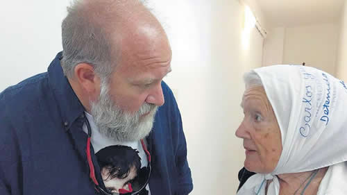

Real Chubut - Agencia de Noticias


"Este caso no puede quedar impune"

Familiares y querellantes participaron de la audiencia ante la Cámara Federal de Comodoro Rivadavia y reclamaron que revierta la decisión del juez Lleral. Insistieron en la teoría de la desaparición forzada en el marco de la represión de Gendarmería.
"No somos un país de idiotas, somos un país de luchas, yo estuve ahí, señor juez, el cuerpo de Santiago no estaba en el río, no nos quieran hacer creer otra cosa". Con su pañuelo blanco en la cabeza, Nora de Cortiñas miró a los jueces que integran la Cámara Federal de Comodoro Rivadavia y sumó sus palabras a los argumentos de las querellas, que ayer exigieron que no sea cerrada la causa por la desaparición y muerte de Maldonado. En medio de un desproporcionado operativo de seguridad y con un grupo de militantes de organizaciones sociales, derechos humanos y partidos de izquierda que habían hecho una vigilia frente a Tribunales, se realizó la audiencia en la que también fueron escuchados los familiares. En sentido contrario se pronunciaron la fiscalía y los abogados de Gendarmería, que avalan la teoría del juez de primera instancia por la cual el joven tatuador anarquista perdió la vida de manera accidental. "La causa no se debe cerrar, algo tan simple como la reconstrucción de lo que pasó el 1 de agosto nunca se hizo, no se tomó declaración a tres testigos mapuches, nunca ampliaron los puntos de pericias de la autopsia, desligaron a los gendarmes como si fueran inocentes y todo el tiempo los encubrieron desde el gobierno y los jueces, nadie quiere saber la verdad, a la fiscalía no le importó saber qué le pasó a Santiago y dónde estuvo 78 días, sólo archivar el expediente", dijo Sergio Maldonado al finalizar la audiencia.
Había trascendido que Stella Peloso, madre de Santiago, podía ser parte de la comitiva que llegó a Rawson, pero finalmente no fue así. "Mi vieja no puede estar acá por qué está enferma a partir de que el juez Lleral confesó que está siendo apretado él y su familia para dejar de investigar", expresó el mayor de los hermanos Maldonado. Cortiñas, de Madres de Plaza de Mayo Línea Fundadora, estuvo acompañada por Margarita Cruz, querellante de la Asociación de Ex Detenidos Desaparecidos. Bien temprano, ante la presencia de unos cincuenta policías federales y gendarmes, Maldonado escribió en una red social: "La presencia de las fuerzas de seguridad para recibirnos. Exagerado como siempre. Verdad y justicia por Santiago". Para él, "este caso no puede quedar impune porque sino qué queda para todas las familias que sufrieron lo mismo, van a creer que pueden hacer cualquier cosa".
En diálogo con PáginaI12, el abogado Mauricio Rojas, que participó de la audiencia por la querella de la Asamblea Permanente por los Derechos Humanos, destacó que "fue triste el papel de la fiscalía (a cargo de Silvina Avila) porque se convirtió en un defensor más haciendo el esfuerzo de justificar situaciones que contradicen un pensamiento lógico y razonado sobre la prueba". El letrado, que también consideró el despliegue de las fuerzas de seguridad como un "operativo sin sentido", centró su intervención en demostrar que el argumento de la supuesta "flagrancia" cometida por los mapuches al cortar la ruta fue "un mero artilugio porque el operativo fue totalmente premeditado". Rojas explicó que "los pelotones de asalto fueron organizados con anticipación, la flagrancia es imprevisto por eso no fue tal, y así lo demuestra el testimonio de la gendarme Dragma Pérez que toma el juez para darle validez al ingreso de Gendarmería a la Pu Lof, pero lo que no hace el juez, y así lo hicimos notar a la Cámara, es tomar el testimonio completo". De hecho, a fojas 616 la gendarme dice que el 1º de agosto era su día de descanso, pero el 31 de julio a las 22 horas su jefe le avisó de urgencia que tenía que estar a las ocho de la mañana en el regimiento. "Dijimos a los jueces de qué flagrancia hablan si claramente en esos dichos queda claro que Gendarmería convoca a todos para pelotones de asalto, con la clarividencia de que tres horas después aplicarían la excepción del código, que es la flagrancia, cuando en realidad fue un asalto coordinado, premeditado y organizado", expresó.
Consultado sobre las posibilidades de que la Cámara, integrada por los jueces Javier Leal de Ibarra, Aldo Suárez y Hebe Corchuelo de Huberman, remueva al juez Lleral y ordene continuar con la investigación, el abogado de la APDH describió que "al menos uno de los jueces tomaba nota e hizo un gesto cuando quedó en evidencia que el fallo que cerró la causa determinó que no hubo nexo de causalidad entre la represión y la muerte de Santiago, esto es, si consideran que Santiago se murió por accidente no investigás más nada, pero no fue accidental su muerte, eso es ridículo y descabellado, podrán decir que el operativo fue legal pero desligarlo del homicidio es un disparate jurídico, creemos que quedó expuesta tal incoherencia, no había sostén jurídico".
En tanto, Verónica Heredia, en nombre de la familia, insistió en que se trató de una desaparición forzada y acompañó su exposición con un video, publicado por PáginaI12, en el que los gendarmes dicen "vamos a quemarles las casas" antes del ingreso a la comunidad mapuche de Cushamen, con lo cual en lugar de flagrancia puede verse que estaban motivados previamente para reprimir. Por su parte, la querella del Centro de Estudios Legales y Sociales también fundamentó la apelación, destacó que quedó demostrado que los gendarmes llegaron hasta el río, donde murió Maldonado, y que su incursión en la Pu Lof no contó con aval judicial.
Fuente: Pagina 12